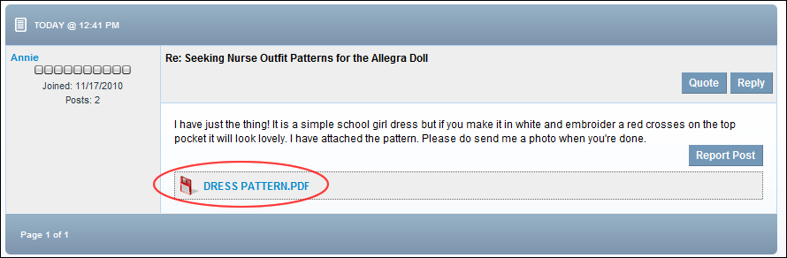

Downloading a Post Attachment
How to download an attachment associated with a post on the Forum module. Note: Attachment download may be disabled, enabled for all users, or restricted to authenticated user.
- Navigate to the required post. The attachment is displayed below the body of the post.
- If the message "Login to download attachment" is displayed, anonymous download is not permitted. In this case you must login to download the attachment.
- Click on the Attachment icon or the [Attachment Name] link and then save or open the attachment as required.

Downloading an Attachment